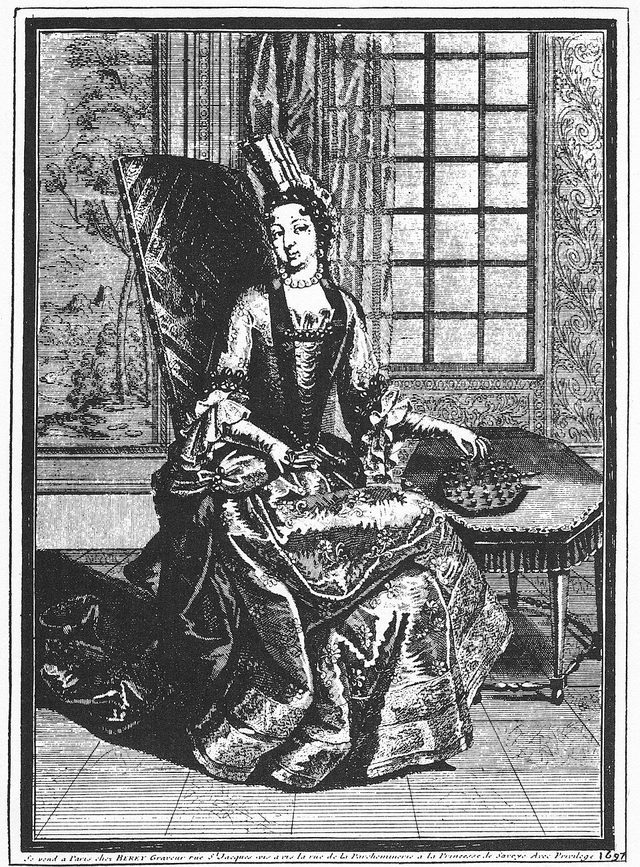

Peg solitaire is a one-player jumping puzzle in which pegs are removed from a board of holes by jumping over them until as few as possible remain. It is best known in the French and English forms, the French board having 37 holes and the English board 33 in the shape of a cross. A copperplate engraving made in 1697 shows Anne de Rohan-Chabot, Princess of Soubise, at the French court with a solitaire board, and the philosopher Leibniz wrote about the puzzle in 1710 and noted that it was best understood by working backward from the finish.
How it is played
All holes are filled with pegs except one in the centre. A peg may jump in a straight line, horizontally or vertically, over one adjacent peg into an empty hole directly beyond, and the peg jumped over is removed. The aim is to finish with a single peg, and finishing with that peg in the centre hole is the master's solution. On a triangular board the pegs may also jump along both diagonals.
Heritage note
The puzzle became a fashionable pastime of the French aristocracy in the 1600s and spread through Europe as a solitary game for long evenings, for travellers and for convalescents. A popular though unproved legend says it was invented by a prisoner who used pebbles and the holes of a pavement to pass the time. Mathematicians have studied the puzzle for centuries, with questions such as which starting holes can end on which finishing holes, and modern wooden boards and glass marbles are still sold in many countries. It is a game that rewards patience, and it requires no opponent at all.
Origins
Documented at the French court in the late 1600s, with older origins disputed; spread across Europe in the 1700s and 1800s in French and English board layouts.
Available in Arcforge
Try a 90-second preview in your browser Google Play App Store
Sources
Related entries


Cynghanedd Poetry Puzzle
United Kingdom · Puzzles and mind games
More from France

Bagatelle
France +1 · Dexterity and skill games

Basque stone lifting
France · Acrobatics and strength
Croquet
United Kingdom +2 · Board and table games
Dots and Boxes
France · Crafts and making